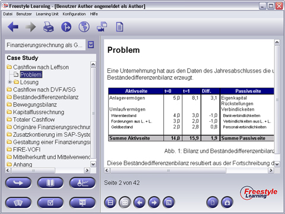

Die Arbeit mit der Case Study ähnelt der Text Study. Sie sollten die Case Study aufrufen, wenn Sie sich bereits mit dem Inhalt des Themas vertraut gemacht haben und nun Ihr Wissen bei der Lösung komplexerer Fallstudien testen möchten. Bei der Auswahl eines Themas innerhalb eines Ordners im Strukturbaum wird Ihnen das korrespondierende HTML-Dokument im Anzeigebereich (Content Panel) angezeigt.

Das Interaction Panel beinhaltet die Standard-Interaktionsschaltflächen.
Zurück zur Hauptseite